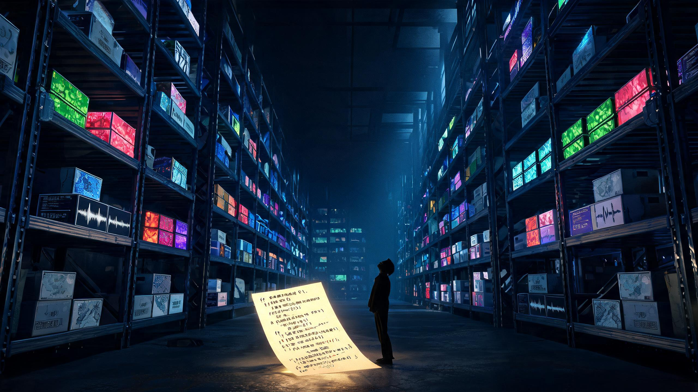

Valve 在 2025 年 2 月公开了《军团要塞 2》的全部游戏代码。我把仓库整个拉下来逐字节数了一遍， 然后照着真实的贴图与音频公式搭了一台装机台。你可以亲手把一个 12MB 的游戏拨成 175GB。

下面这条就是一个 175GB 的安装包，从左到右按体积排开。代码在最右端。 按住按钮不放，条带会持续放大——松手就停，随时能看当前倍率。
整块条带就是一个 175 GB 的安装包。代码在里面，你看不见。
那一整条金色，就是《军团要塞 2》全部 533,158 行游戏代码， 15.56 MB。 它和它所在的安装包之间差了 11,519 倍。
再补一刀：这 15.56 MB 用 gzip -9 压一下只剩 3.29 MB。
而一张 4096×4096 的未压缩贴图是 64 MB——一张贴图能装 19 份完整的游戏代码。
先点一张预设卡看看手感，再自己拨滑块。每一项都是明摆着的乘法，公式在下面可以展开核对。
金色那条是你刚拨出来的。其余为各游戏公开标注的磁盘占用。
既然代码这么小，那 Valve 放出来的 464 MB 仓库里装了什么？点方块可以往下钻，点标题回上一层。
点任意方块往下钻一层。
src/engine 的目录，只有一个文件src/engine/audio/public/sound.h
3,134 字节
Source 引擎本体从来没有开源。Valve 放出来的是游戏层代码——兵种、武器、回合规则这些，
引擎那部分依然是编译好的 engine.dll。
所以「TF2 开源了」这句话，得打个折扣听。
拨完滑块你大概已经有数了：把包体推上去最快的那一格，永远是贴图分辨率和 PBR 通道数。一套 2K 六通道材质 32 MB，乘上三千多种材质就是一百多个 G。 语音排第二，十国配音能顶三十个 G。
代码在这场膨胀里几乎不参与。DOOM 的年代它还占包体的 6.8%， 到现代 3A 只剩 0.075%——九十倍的塌缩。 把代码滑块从 1 MB 拉到 500 MB，总量那根条几乎不动。
下次看到 175GB 的安装包，别问程序员写了多少代码。该问的是那批 4K 贴图开了几个通道， 以及有没有人真的需要那十种语言的配音。
ValveSoftware/source-sdk-2013，master 分支）。
下载 tarball 后按文件扩展名逐字节统计，采集于 2026 年 8 月。
仓库全部文件 487,115,673 字节；源码文本 72,650,541 字节；预编译二进制 356,056,626 字节。
src/game/{client,server,shared}/tf 三个目录的 .cpp / .h 文本，
共 16,312,863 字节、533,158 行；gzip -9 压缩后 3,447,002 字节。